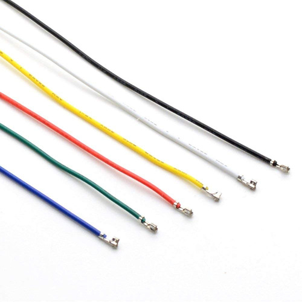
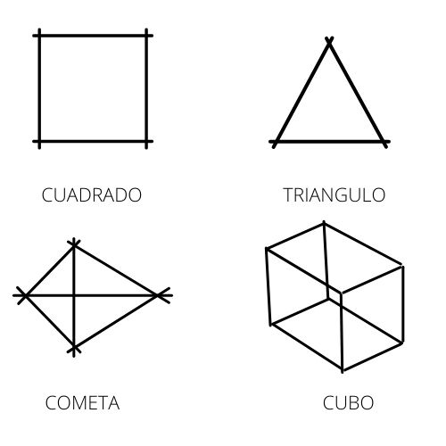

Que es SOLDADURA
Soldar es unir sólidamente dos piezas metálicas fundiendo su
material en el punto de unión, o mediante alguna sustancia igual o
parecida a ellas. Las soldaduras pueden ser duras o blanda;
Entre las soldaduras duras se encuentran la soldadura eléctrica
por arco, la soldadura eléctrica por puntos, la soldadura
oxiacetilénica, etc.
Entre las soldaduras blandas es decir la que se funden a menos de
200°C, se encuentran la soldadura con estaño. Un factor
fundamental es la calidad del estaño, éste debe tener una mezcla
de 60 - 40, es decir, una aleación del 60% de estaño y 40% de
plomo.
ADVERTENCIA
EL CAUTÍN SE CALENTARA A UNA TEMPERATURA DE 200°C
TEN MUCHO CUIDADO YA QUE PUEDE GENERAL QUEMADURAS.
PROCESO
PASO 1
Con ayuda de pinzas y la regla divida el cable UTP en partes de 10 cm y otras de 12 cm.

PASO 2
Con el cautín pre-estañar los vértices (o extremos) de los cables
en una longitud de 1 cm (máximo), toma los pedazos de cable y
forma las siguientes figuras:

Solda los extremos de cada figura
Una vez terminado limpia el cautín para que no se manche.
EJERCICIOS
Solda una figura libre, elije la que mas te guste no importa si lleva mucho esfuerzo o no, lo importante es practicar.
Para la proxima clase necesitaremos:
-Una fotocelda.
-Un potenciometro de 5k o 10k.
-Cinco leds.
-Un condensador de 1μF, 10μF, 100μF, 1000μF (microfaradio).
-Una bateria de 9v.
-Un par de caimanes.
-Tres resistencias de 1000Ω.
-Tres resistencias de 220Ω.